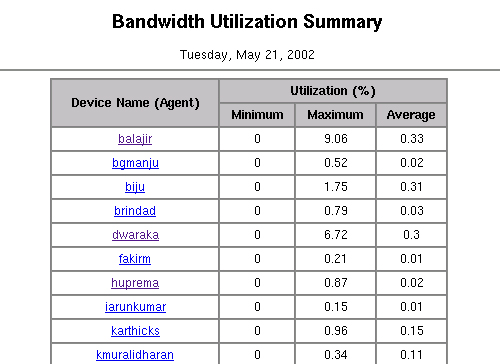
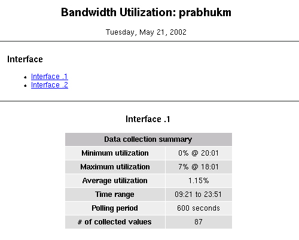
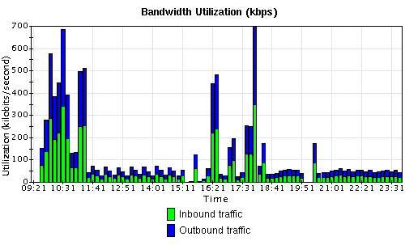
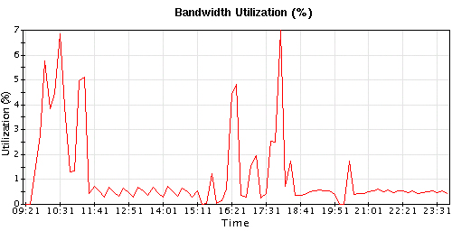
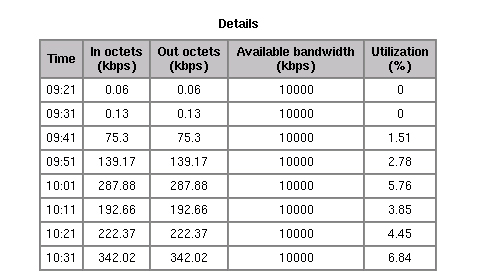

For more details, refer to the help document "Creating Performance Reports" in Developer guide.
Bandwidth of a device on a network is the maximum amount of data that the device can take in from the network or give out into the network at a given instant. The Network Interface Card (NIC) in the device determines this maximum limit. The amount of data transferred across a device's network card, at a given instant, is the actual bandwidth utilized by the device at that instant.
This example "Bandwidth utilization Report" gives the bandwidth utilization of devices:
Kbps:
|
--------------------------------------------- 1024 (OR) (DifInOctets (kilobytes/sec) + DifOutOctets (Kilobytes/sec)) * 8 |
Percentage of device's available bandwidth:
|
------------------------------------------------------------- ifSpeed (bits/sec) |
1. Configure the required OIDs with the required criteria. PolledData for 2.2.1.10 and 2.2.1.16 must store the delta values (instead of absolute counter values) divided by the time period of the delta. This effectively stores the interface in and out octets in bytes/sec. To achieve this, the PolledData for the OIDs must have saveAbsolutes as "false" and timeAvg as "true". PolledData for 2.2.1.5 must store the absolute values (in bits per second), hence saveAbsolutes should be "true" and timeAvgshould be "false". The polling period of the 3 PolledData must be equal. Only if a device has all the three OIDs with this specific configuration will it be included in the report.To achieve the above, add the following entries in Polling.conf:
<POLLING_OBJECT >
...
...
<DATA_COLLECTION><DATA_TO_POLL</DATA_COLLECTION>
type="multiple"
name="Interface_in_octets"
oid="2.2.1.10"
saveAbsolutes="false"
timeAvg="true"
pollingPeriod="300"/>
<DATA_TO_POLL
type="multiple"
name="Interface_out_octets"
oid="2.2.1.16"
saveAbsolutes="false"
timeAvg="true"
pollingPeriod="300"/>
<DATA_TO_POLL
type="multiple"
name="Interface_speed"
oid="2.2.1.5"
saveAbsolutes="true"
timeAvg="false"
pollingPeriod="300"/>
...
...
</POLLING_OBJECT>2. Modify the templates as required (Optional)
You may modify SummaryTemplate.html and DetailsTemplate.html template files. Bandwidth utilization report is generated in the format specified in these files. You may change the font, color, style, etc. of the template files.
For more details about the template files, refer to the Javadoc comments in the Template.java file present one directory above this directory.
3. Compile the required classes
4. Add this report for reports scheduling Add an entry in Reports.conf present under <Web NMS Home>/conf directory:
- Add the following to your classpath:
- <Web NMS Home>/classes
- <Web NMS Home>/classes/AdventNetCharts.jar
- <Web NMS Home>/classes/jcchartK.jar
- <Web NMS Home>/classes/JimiProClasses.zip
- Compile Template.java (present one directory above this directory) and BandwidthUtilization.java into <Web NMS Home>/classes directory.
<REPORT className="com.adventnet.nms.example.report.BandwidthUtilization"
DAILY="true" />5. Start/restart WebNMS Start Web NMS or restart WebNMS if it was running already.
This report will be triggered daily, some time after midnight. Report generation will take a few minutes to a few hours depending on the number of devices for which the required bandwidth utilization OIDs are configured.

This page displays the list of agents and the corresponding minimum, maximum and average percentage of bandwidth utilization. When you select one of the agents , you will get another page which will show the following statistics.


This bar graph shows the inbound and outbound traffic for the interface when measured over time.

This line graph shows the trend of bandwidth utilization.

Finally, this table gives you statistical values of bandwidth utilization.
To revert to the original configuration, please do the following:
Copyright © 1996-2002, AdventNet Inc. All Rights Reserved.